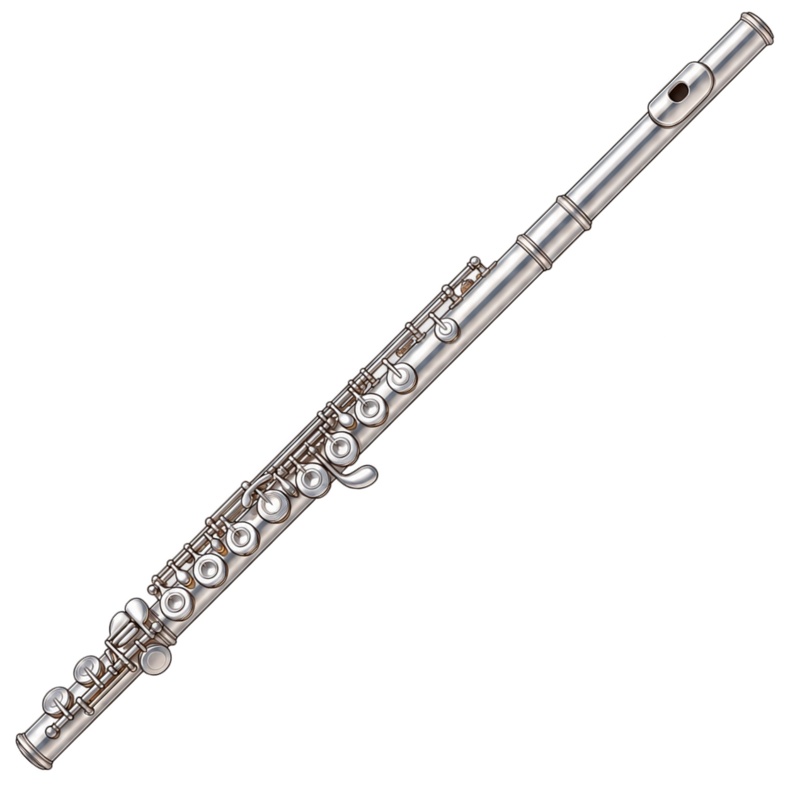
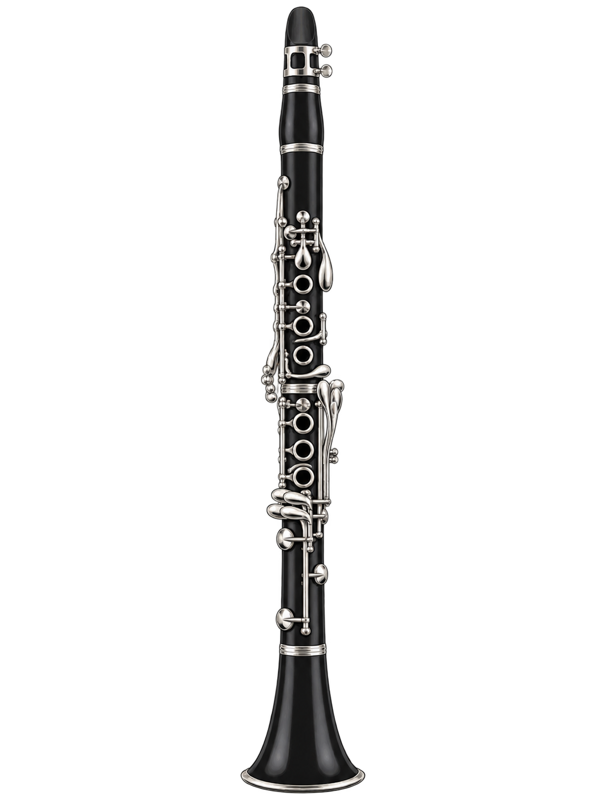
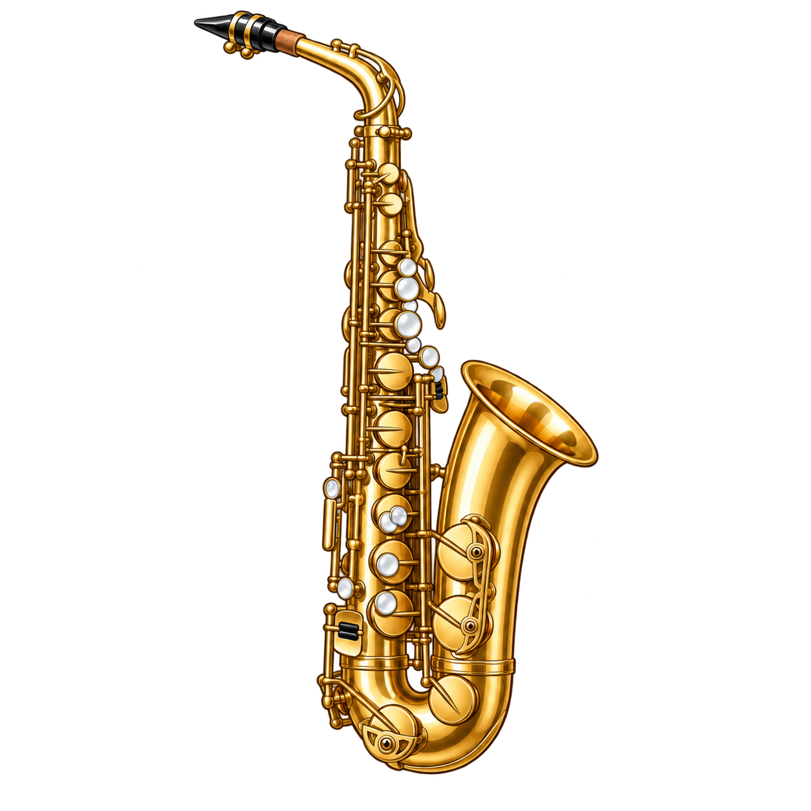
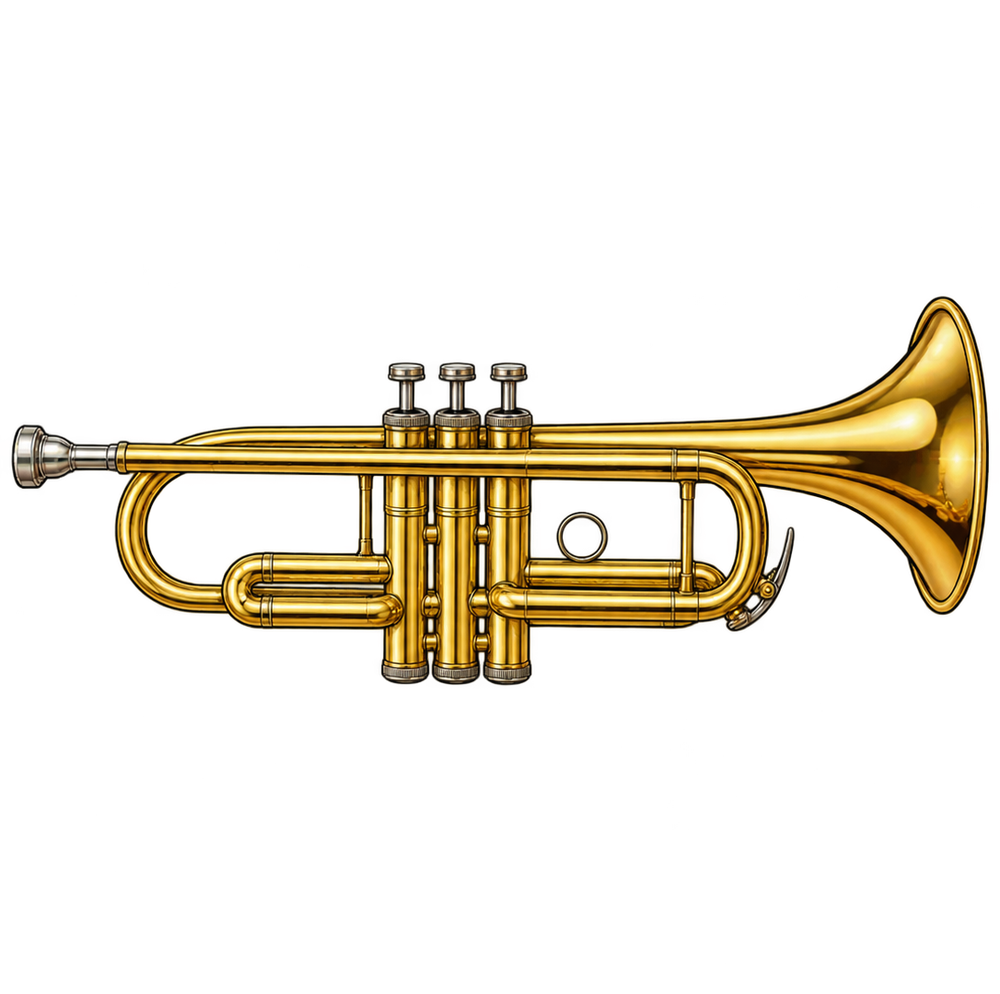
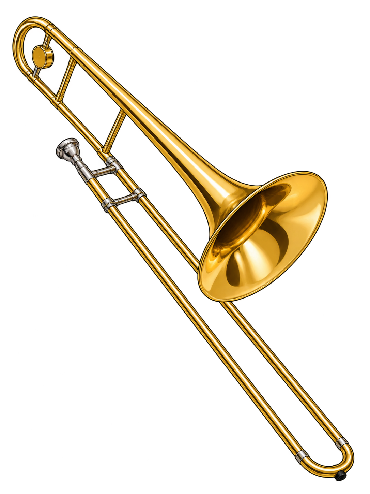

Tietokoneella kavenna selainikkunaa pystymalliseksi.
Soitit kaikki 16 nuottia: 8 neljäsosaa ja 8 puolinuottia.





Konserttisali
X-siirto 0 keskittää nuotin. Miinus siirtää vasemmalle ja plus oikealle; viivasto pysyy keskellä. Y-siirron miinus nostaa ja plus laskee nuottia sekä viivastoa yhdessä. Arvo 0 keskittää kuvan nuottialueelle. Y-siirron rajat mukautuvat käytettävissä olevaan tilaan. Liian suuri nuottikuva sovitetaan alueelle; tallennetut koko- ja siirtotoiveet säilyvät. Nuotin koko muuttaa myös viivaväliä, jotta sävelen paikka säilyy oikeana.
Ajat lasketaan äänen alusta. Kestoja voi säätää 0,05–5 sekuntiin. Punastumisen pidentäminen siirtää tarvittaessa paisumisen alkua automaattisesti. Poksahdus seuraa paisumisen loppua, aikaisintaan neljäsosalla 1,2 s ja puolinuotilla 2,0 s. Hyväksyntä jatkuu poksahdukseen asti: paisumisen loppua siirtämällä muutat samalla hyväksyttävän äänen ylärajaa.
1 = tasainen kasvu. Suurempi arvo tekee alusta hitaamman ja lopusta nopeamman. Poksahdushetki pysyy samana.
Pienempi arvo reagoi hiljaisempaan soittoon.
Helpottaa vaihtoa hiljaisempaan säveleen. Pois = alkuperäinen vaihtosuoja. Ääntä ei kompressoida.
75 BPM: neljäsosan tavoite 0,8 s ja puolinuotin 1,6 s. Neljäsosan alaraja on 0,6 s ja puolinuotin 1,4 s. Oikea sävel hyväksytään, kun lopetat ennen poksahdusta — myös punastumisen ja paisumisen aikana. Oletusasetuksilla ylärajat ovat alle 1,2 s ja alle 2,0 s. Koko nuotti muuttuu ensin punaiseksi ja paisuu sen jälkeen asetusten mukaisesti. Paisumisen jälkeen nuotinpää poksahtaa ja muut osat lentävät eri suuntiin. Viivaston viisi keltaista pistettä näyttävät äänen keston. Tavoitteen jälkeen ne pysähtyvät oikeaan reunaan ja punastuvat nuotin mukana. Kerää kumpaankin koriin 8 nuottia.
Aloittaessa mitataan taustakohina. Ole hetki hiljaa. Nuottinäkymä käyttää soittimen kirjoitettuja säveliä.
Mukana ovat soitin, kaikkien soitinten vireet, nuottinimet, kohinaraja, vaihtosuojan dynamiikan tasaus, nuottinäkymän säädöt ja kaikki efektisäädöt. Käytä JSON aloittaa kierroksen alusta.
Valitse soitin ja aloita omaan tahtiin.
Hiiritesti · pidä sävelpainiketta pohjassa äänen ajan
Ole hetki hiljaa · 1,5 sekuntia
Versio 0.7.41
Valmistellaan offline-käyttöä…
Uusi versio on valmis. Päivitys avaa sovelluksen uudelleen ja aloittaa kierroksen alusta. Tallennetut asetukset säilyvät.